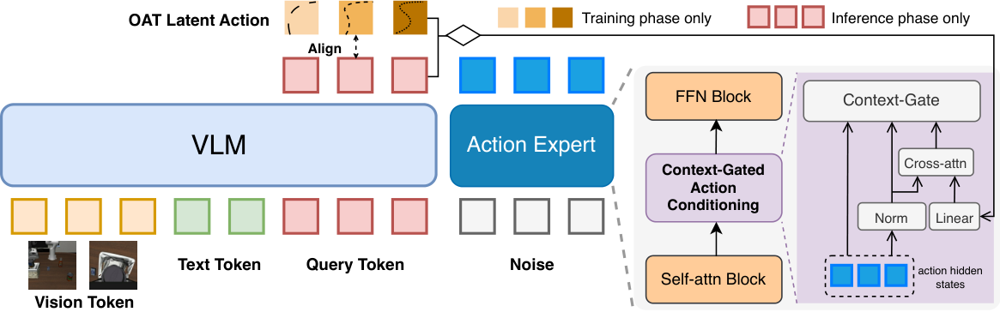
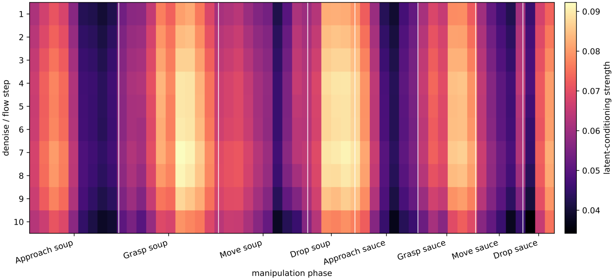
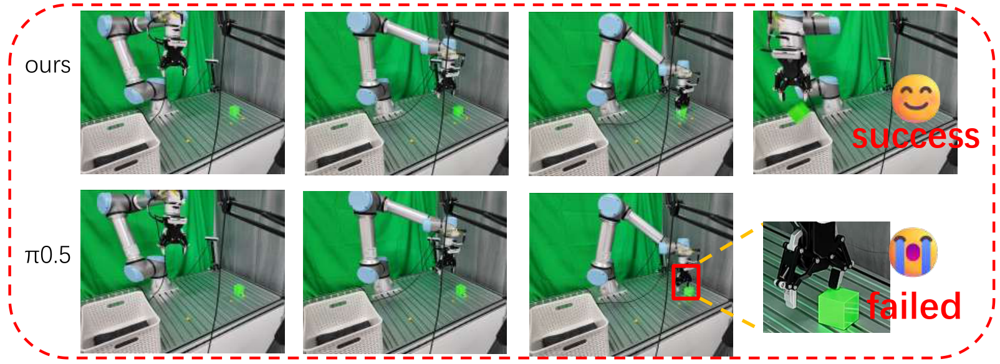
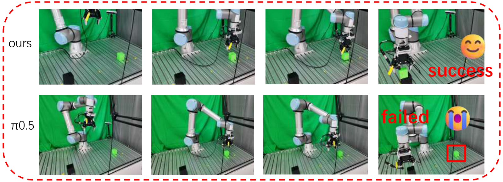
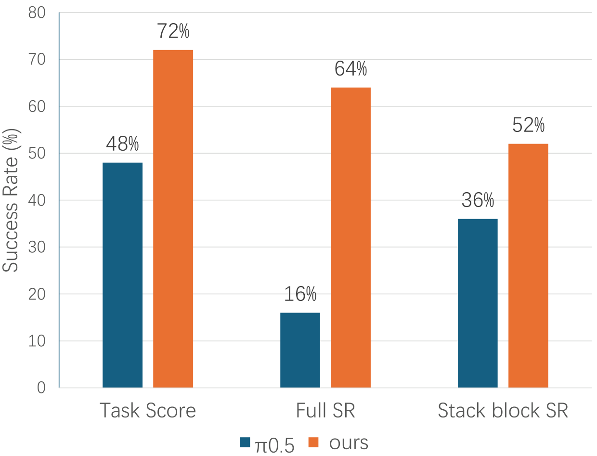

Predict
Dedicated VLM query tokens predict OAT-aligned latent actions from the current image and language instruction.
Vision-Language-Action Models
A VLM-native latent-action interface that gives continuous action experts structured guidance while learning when and how strongly to use it.
arXiv:2607.04816 [cs.RO]
LIBERO average success
LIBERO-Plus SFT
CALVIN 5-task completion
01 / Abstract
CAC-VLA trains dedicated VLM query tokens to predict coarse-to-fine latent actions encoded from future action segments. These latent actions are not executed as trajectories; instead, they provide action-structured guidance to the original continuous action expert.
A context gate calibrates how much retrieved latent-action information enters each expert layer, allowing the policy to use action guidance adaptively across task phases and generation states.
An intermediate interface between VLM representations and continuous robot control.
Cross-attention retrieves action information while a gate controls residual injection.
LIBERO, LIBERO-Plus, ablations, and initial real-world tabletop experiments.
02 / Motivation
Standard VLA systems ask the action expert to recover precise motor structure from representations optimized primarily for visual-language understanding. CAC-VLA makes that interface explicitly action-structured and adaptive.
03 / Method
CAC-VLA predicts compact, coarse-to-fine representations of future action segments inside the VLM. The original action expert remains responsible for producing executable continuous action chunks.

Dedicated VLM query tokens predict OAT-aligned latent actions from the current image and language instruction.
Expert hidden states use cross-attention to retrieve action information relevant to the current layer and generation state.
A channel-wise context gate controls the residual contribution of the retrieved latent-action update.
Encodes future action segments into raw latent-action targets for alignment and conditioning.
The OAT tokenizer is removed at inference; the expert uses latent actions predicted by VLM query tokens.
Latent-action loss weight λalign = 0.1; the OAT tokenizer is used for training targets and removed at inference.
Cross-attention decides what is relevant. The gate decides how much enters the expert.
04 / Adaptive Conditioning
Predicted latent actions can be incomplete, noisy, or mismatched with the immediate control requirement. Their usefulness also changes across task phases and flow steps, so fixed-strength fusion is unnecessarily rigid.

05 / Simulation
CAC-VLA is evaluated on LIBERO, LIBERO-Plus, and CALVIN D-D, covering standard manipulation, seven distribution shifts, and long-horizon task sequences.
LIBERO
98.9% Average success rate, ranked #1LIBERO-Plus
90.4% Supervised fine-tuningDesign ablation
90.43% Full CAC-VLA on LIBERO-PlusCALVIN D-D
67.1% 5-task completion rateCAC-VLA ranks first overall and achieves the best Spatial and Long suite scores.
The strongest average result under supervised fine-tuning across seven shifts.
Trained on LIBERO and evaluated directly on LIBERO-Plus without shift-specific fine-tuning.
| Method | Spatial | Object | Goal | Long | Avg. |
|---|---|---|---|---|---|
| π0.5 | 98.8 | 98.2 | 98.0 | 92.4 | 96.9 |
| ACoT-VLA | 98.6 | 99.0 | 99.4 | 97.0 | 98.5 |
| CAC-VLA | 99.6 | 99.8 | 99.0 | 97.2 | 98.9 |
Moderate future context and adaptive injection provide the best average result.
| Setting | Spatial | Object | Goal | Long | Avg. |
|---|---|---|---|---|---|
| Hl = 10 | 94.81 | 72.45 | 86.60 | 98.86 | 90.43 |
| Hl = 20 | 94.56 | 70.52 | 81.91 | 97.81 | 88.38 |
| Hl = 30 | 94.37 | 68.06 | 79.83 | 97.20 | 87.66 |
| Variant | Spatial | Object | Goal | Long | Avg. |
|---|---|---|---|---|---|
| Full CAC-VLA | 94.81 | 72.45 | 86.60 | 98.86 | 90.43 |
| Without context gate | 94.87 | 71.55 | 81.91 | 99.21 | 89.36 |
| Without latent action | 94.25 | 70.90 | 82.76 | 95.53 | 87.95 |
06 / Real World
CAC-VLA and the π0.5 baseline are fine-tuned separately on the same 50 demonstrations for each task and evaluated over 25 independent trials using a UR7e and two RealSense D435i cameras.



Scope. The real-world study is intentionally initial: two tasks, one robot embodiment, and a limited demonstration set. Broader tasks and task-adaptive latent horizons remain future work.
07 / Takeaway
CAC-VLA makes the VLM-to-expert interface action-structured and adaptive.
VLM-native latent-action prediction without a standalone executable action generator.
Expert-preserving design that leaves continuous robot control to the original action expert.
Context-gated residual modulation that calibrates guidance instead of trusting it uniformly.
08 / Citation
Use the arXiv identifier for the current public version.
@misc{xiong2026cacvla,
title = {CAC-VLA: Context-Gated Action Conditioning for
Vision-Language-Action Models},
author = {Xiong, Yifu and Yu, Wenhao and Lin, Jiaxuan and
Zou, Bojun and Li, Jiahao and Zhang, Lu and
Zhang, Yanyong and Ji, Jianmin},
year = {2026},
eprint = {2607.04816},
archivePrefix = {arXiv},
primaryClass = {cs.RO},
url = {https://arxiv.org/abs/2607.04816}
}